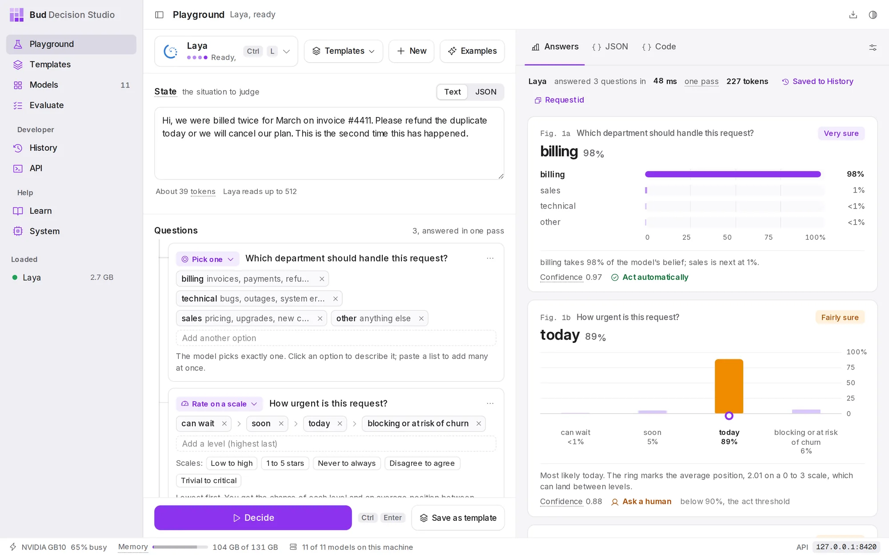
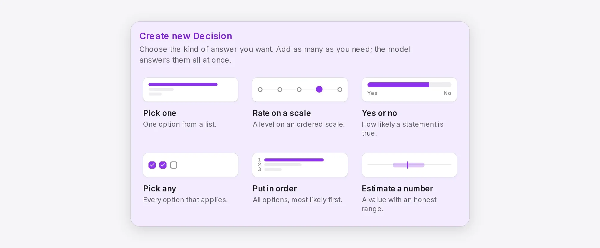
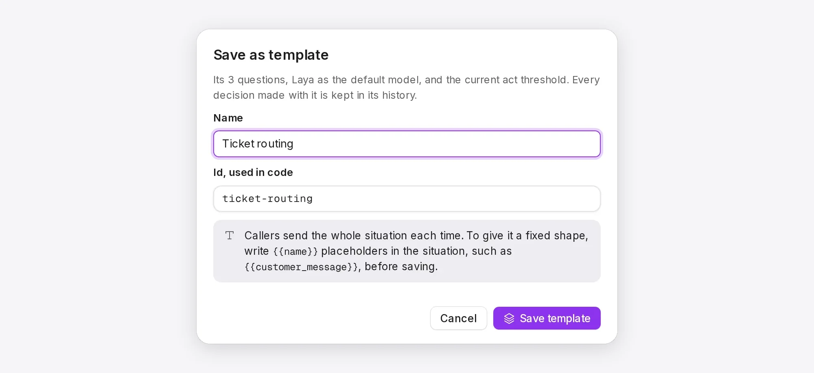
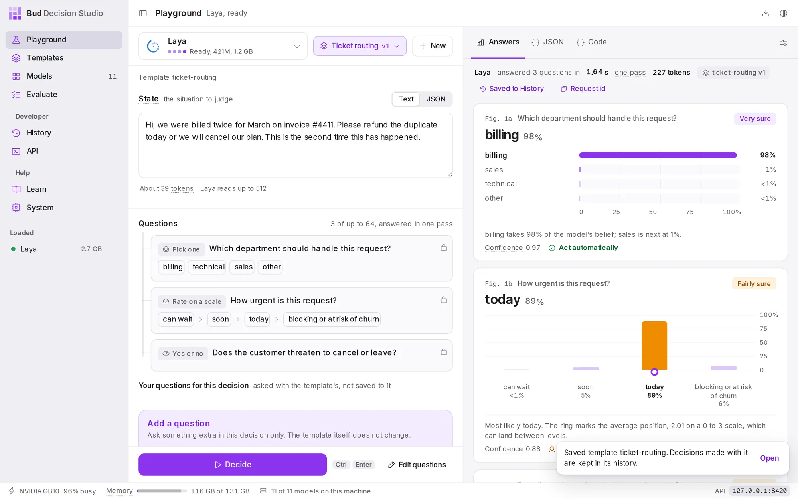

DocsGet started
Quickstart
In about ten minutes you will ask a model a question, read its answer, save the decision as a template, find it in History and call it from your own code.
Before you start#
Install the app and download one model. Laya is a good first choice: it is a 0.8 GB download, needs about 1.2 GB of memory, runs on any computer and answers English questions in milliseconds on a GPU. If you skipped the model list on first launch, open Models, select Laya and choose Download.
A decision model does not write text. You give it a situation (an email, a ticket, a log line, some JSON) and questions with the answers you allow, and it returns how likely each answer is. Everything below builds on that one idea.
Ask your first question#
Open Playground from the sidebar. It opens on an example: a customer message about a double charge, and three questions about it.
- Check the model. The model button at the top left shows Laya. Choose it (or press Ctrl L, ⌘ L on a Mac) to pick another downloaded model. A model that is not loaded yet loads the first time you use it.
- Read the situation. Under State is the message the model will judge.
- Read the questions. Under Questions are three of them: which department should handle the message (Pick one), how urgent it is (Rate on a scale) and whether the customer threatens to leave (Yes or no).
- Press Decide (or Ctrl Enter). The model reads the situation once and answers every question together.

Read the answer#
Each answer is a figure:
- The answer in large type with how likely the model thinks it is: billing 98%.
- Every option on the same 0 to 100% scale, so you can see what came second and by how much.
- A plain-language label at the top right: Very sure (90% or more), Fairly sure (75% or more), Leaning (55% or more) or Unsure.
- The verdict in the caption: Act automatically when the answer is at least as likely as the act threshold (90% unless you change it), otherwise Ask a human.
In the example, the department is clear (billing, 98%, so act automatically), but urgency is only 89% sure of "today", just under the threshold, so that answer asks a human. This is how decision models are used in real software: act on the confident answers, and send the rest to a person. Probabilities, certainty and acting explains the numbers in depth.
Make it your own#
Press New to start a blank decision. Paste your own text under State, then choose a kind of answer under Create new Decision:

Write the question as a sentence and add its options. For Pick one, add a short description to an option when its name alone could be misread (for example, billing with "invoices, payments, refunds"). Press Decide again. Playground covers every control.
Save it as a template#
Once the questions work, keep them. A template is a decision you can reuse: its questions, its default model and its settings, under a short id your code can call. Every save is a numbered version.
- Choose Save as template at the bottom of the left column.
- Name it. Type
Ticket routing. The id, used in code, fills in asticket-routing. - Choose Save template.

{{name}} placeholders; this quickstart keeps the whole situation as one piece of text.The Playground now runs the template: its name and version, Ticket routing v1, replace the Templates button, and its questions are locked. Press Decide to run it.

Find it in History#
Every decision is kept on your computer, wherever it came from: the Playground, your code, an SDK or curl. Choose Saved to History above an answer to open that decision, or open History from the sidebar to see them all. You can filter by template, model, result and time, see which decisions asked a human, label the right answers and rerun a decision on another model.
Each template also has its own history: open Templates, choose Ticket routing, then the History tab. History shows everything you can do there.
Call it from your code#
While the app is open, the studio listens at http://127.0.0.1:8420 on your computer (the API page shows the exact address). No key is needed from the same machine. Send the template's id and a new situation.
The response is the decision as it was kept, with an id you can look up later. The response in the example is a real one from Laya, shortened to the fields that matter here.
Read it the same way as the figures. The department is most likely technical (89.8%), but that is just under the template's act threshold of 90%, so act is false and all three questions are listed in needs_review for a person to check. The decision is in History under the same id, which the response also returns in the x-basal-decision-id header.
Code written for TypeSafe's Jev API works too: point its base URL at the studio. See Move from Jev or a gateway.
/v1/studio/decisionscurl -s http://127.0.0.1:8420/v1/studio/decisions -H 'Content-Type: application/json' -d '{ "template": "ticket-routing", "state": "The app crashes every time I export a report to PDF. I need these reports for a client meeting tomorrow morning."}'import httpxstudio = httpx.Client(base_url="http://127.0.0.1:8420/v1/studio", timeout=60)d = studio.post("/decisions", json={ "template": "ticket-routing", "state": "The app crashes every time I export a report to PDF. " "I need these reports for a client meeting tomorrow morning.",}).raise_for_status().json()if d["act"]: route(d["answers"]["department"]["choice"]) # every answer is sure enough to act onelse: ask_a_person(d["id"], d["needs_review"]) # the questions that were notconst res = await fetch("http://127.0.0.1:8420/v1/studio/decisions", { method: "POST", headers: { "Content-Type": "application/json" }, body: JSON.stringify({ template: "ticket-routing", state: "The app crashes every time I export a report to PDF. I need these reports for a client meeting tomorrow morning.", }),});const d = await res.json();console.log(d.act ? "act" : "ask a person about", d.needs_review);{ "id": "dec_01M3TF4C27YTV7ZZCNWEWYCZRT", "object": "decision", "status": "completed", "template": {"id": "ticket-routing", "version": 1, "ref": "ticket-routing", "resolved_from": "latest"}, "model": "laya", "answers": { "department": {"type": "choice", "choice": "technical", "probabilities": {"billing": 0.0234, "technical": 0.8983, "sales": 0.0322, "other": 0.0461}, "certainty": 0.8983, "act": false}, "urgency": {"type": "score", "score": 2.0492, "legend": {"0": "can wait", "1": "soon", "2": "today", "3": "blocking or at risk of churn"}, "probabilities": {"0": 0.0106, "1": 0.2119, "2": 0.4952, "3": 0.2823}, "certainty": 0.4952, "act": false}, "churn_risk": {"type": "noul", "noul": 0.1844, "probabilities": {"false": 0.8156, "true": 0.1844}, "certainty": 0.8156, "act": false} }, "act": false, "needs_review": ["department", "urgency", "churn_risk"], "settings": {"act_threshold": 0.9, "temperature": 1.0}, "store": "full"}Where to go next#
- Playground: every control, including comparing models and testing option order.
- Templates: variables, versions, aliases and comparing two versions on real traffic.
- Evaluate: measure a model on your own labelled examples and pick a safe act threshold.
- Call the studio from your code: the full path from a template to production code.
- API reference: every endpoint, field and error.